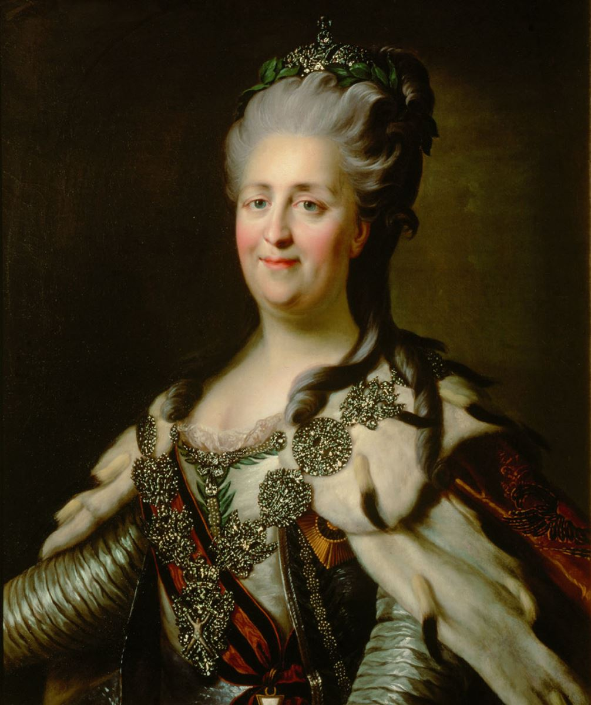

Cũng như Từ Hy thái hậu của Tầu. Catherine Đệ nhị, Nữ hoàng đế của nước Nga (1729-1796) là một bực phụ nữ lừng danh trong Lịch sử thế giới. Người Nga đã tôn bà là Catherine Đại đế (Catherine In Grande). Khác hơn bà Từ Hy tàn bạo và chính trị vung về, Catherine II là một vị nữ hoàng sáng suốt, cai trị rất khéo, điều khiển việc nước rất thông minh. Nhờ bà mà Đế quốc Nga hồi thế kỷ XVIII đã mở mang phồn thịnh và gây được uy tín lớn lao với các cường quốc trên thế giới, ai cũng kính nể bà và được công chúng Nga tôn sung, yêu mến.
Nhưng Catherine II lại cũng nổi tiếng là một người đàn bà đa dâm. Về phương diện tình dục, Catherine không kém gì Từ Hy Hoàng thái hậu của nhà Mãn Thanh Trung quốc hồi Thế kỷ XIX.

Các nhà sử học trên thế giới đã viết rất nhiều sách về thời đại Catherine Đại đế của Đế quốc Nga. Nhưng tất cả đều khen ngợi bà và kính phục bà, tuy đời tư của nữ hoàng vĩ đại này đã chứa đầy những thiên tình sử ly kỳ, quái gở. Ngoài những tình nhân có tên tuổi trong Lịch sử: Sultikof, Orloff, Potemkine, nhất là Potemkine – Poniutowsky, Landekoi (một họa sĩ 48 tuổi), Zoubov (một tên lưu manh 24 tuổi), còn có vô số những tình nhân qua đường, tạm bợ một vài tháng. Như anh thợ rèn Zavadovski, anh binh nhì Zorick, chàng thám tử Arkarow, anh da đen Yermoloff, Namonov, v.v… và v.v…không biết mấy trăm người! Tuy vậy, Catherine Đệ II vẫn để lại trong Sử sách danh tiếng lẫy lừng của một vị Đại Hoàng đế của nước Nga hồi thế kỷ 18. Dân chúng Nga vẫn gọi bà là “Bà mẹ yêu quý của chúng ta”.
Sinh năm 1729 ở Allemagne (Đức), tên thật của bà là Sophie Zerbst, con gái của một vị Hoàng thân nhỏ và nghèo. Năm 15 tuổi Sophie được Nữ hoàng nước Nga lúc bấy giờ là Elizabeth gọi sang Nga để gả cho cháu ruột của bà là Thái tử Pierre Ulrich, 17 tuổi.
Thái tử Pierre là một thanh niên vừa ốm yếu, vừa đần độn, lại hay say rượu, hoang đường, tính tình bần tiện, ít trí khôn. Tuy còn trẻ tuổi, nhưng chàng không chịu học hành gì cả, chỉ thích cưỡi ngựa đi chơi lang thang cả ngày với mấy sĩ quan hầu cận.
Hôn lễ được cử hành long trọng ngày 21 tháng 8 năm 174 tại thủ đô nước Nga.
Nhưng thái tử Quận công Pierre hoàn toàn bất lực về sinh lý, mà nữ quận chúa Sophie, vợ của nàng thì lại rất đẹp, và rất đa tình. Mới có 15 tuổi, Siphie đã ưa trang sức, làm dáng, cả ngày chỉ xức dầu thơm, nước hoa, bà đùa rỡn với các ông Hoàng và các quận công trai trẻ trong cung, bạn thân của chồng. Tuy vậy, suốt chín năm đằng đẵng, Sophie vẫn chung tình với Thái tử Pierre, và cả trong triều và ngoài dân chúng Kinh đô Saint-Petersbourg không một ai ngờ rằng sau chín năm thành hôn với Thái tử nữ quận chúa Sophie vẫn còn trinh tiết nguyên vẹn!
Thật là một chuyện hy hữu trên đời. Không có người chồng nào cưới một cô vợ trẻ và đẹp tuyệt trần như Sophie mà chín năm trời không hề rờ mó đến vợ. Sự thật, thái tử Pierre không phải là một chàng điên khùng, hay không biết tình ái là gì. Nhưng chàng thanh niên 26 tuổi vẫn giấu kín không cho ai biết chàng bị một cái tật ở nơi bí hiểm không cho phép chàng làm tròn bổn phận thiên nhiên của người đàn ông đối với vợ. Tội nghiệp cho quận chúa Sophie kiều diễm, mang tiếng là vợ chính thức của Thái tử, Hoàng hậu tương lai của Đại Đế quốc Nga, mà phải chịu âm thầm đơn độc, nhịn suốt chín năm lạnh lẽo, chưa hề được hưởng cái lạc thú mê ly, say sưa tuyệt diệu của ái tình, như tất cả những người vợ khác.
May sao, nhờ một bác sĩ danh tiếng, tên là Boerhave, có tài cao thuật khéo, đã dùng dao kéo giải phẫu để cởi mở cho Thái tử cái cục nợ thắc mắc đã làm bí lối lưu thông cho dòng men sinh lực.
Bac sĩ Boerhave được Hoàng hậu Elizabeth, cô ruột của Thái tử, ban tặng một viên ngọc kim cương to bằng ngón chân cái để thưởng công ơn quý báu của nhà đại y khoa.
Hoàng gia Nga và cả Triều thần đều vui mừng, vì nhờ sự kiện đó mà Thái tử Pierre đã có thể làm đầy đủ bổn phận sinh lý của một người chồng. Ngai vàng của Đại Đế quốc sẽ chắc chắn có người kế vị nối dõi.
Thế rồi vợ của Thái tử, nữ quận chúa Sophie quả nhiên có chửa.
Nhưng ai nấy đều ngạc nhiên. Sao nữ Quận chúa có chửa mau chóng vậy nhỉ? Sau chín năm trinh tiết vì chồng bất lực, bây giờ Thái tử vừa được bác sĩ khai thông cho đường sinh dục, mới được 4 tháng mà nữ Quận chúa đã sinh ra được một đứa con trai rồi.
Thái tử Pierre nhất định không tin rằng đứa con trai kia là con của chàng.
Thì có người chồng ngu ngốc nào tin được rằng vợ mình mới có chửa với mình hơn bốn tháng đã sinh nở. Thì đây, cái bí mật đã tiết lộ liền, đứa con trai ra đời ngày 20-9-1754, tốt đẹp, kháu khỉnh, rất khỏe mạnh, nhưng …không giống Thái tử chút nào.
Một đứa con ngoại tình! Cả trong Triều, ai mà không biết chuyện nữ quận chúa Sophie có một tình nhân để thay thế chồng trong lúc người chồng còn bệnh hoạn ốm yếu, không có khả năng sinh lý.
Chính trong quyển Nhật ký của nàng Quận chúa Sophie cũng nhìn nhận rằng người tình vụng trộm ấy là Soltykoff, một vị thượng quan trong Triều. Dù muốn dù không, đứa con trai kia cũng phải chính thức là con của Thái tử. Người ta đặt tên cho vị Hoàng nam bất ngờ ấy là Paul Petrovich (sau này sẽ lên ngôi tức là Hoàng đế Paul 1er).
CUỘC ĐẢO CHÍNH TRONG TRÁI TIM QUẬN CHÚA VÀ TRÊN NGAI VÀNG NƯỚC NGA
Ngày 24-12-1761, Hoàng hậu Elizabeth băng hà, thái tử Pierre lên nối ngôi, lấy hiệu là Hoàng đế Pierre III. Bấy giờ ông đã 35 tuổi, nữ Quận chúa Sophie được Triều đình tôn làm Hoàng hậu Catherine.
Một thời gian không lâu, Triều đình và dân chúng nhận thấy rõ ràng Pierre đệ tam không xứng đáng là một vị Hoàng đế Nga, một Đại Đế quốc nằm giữa Châu Âu và châu Á, diện tích rộng lớn 22 triệu kiloomet vuông, dân số gần 170 triệu người.. Pierre III chủ trương chính sách thân thiện với Allemagne (Đức) là thù địch của Nga, ông lại gây nhiều điều bất bình trong Quân đội và trong hầu hết các giới nhân dân. Ông ban bố nhiều sắc lệnh độc đoán, tăng thuế nặng nề và ăn chơi xa xỉ. Ông đem một cô tình nhân là Vorontsof, người xấu xí, ăn nói tục tĩu, tính nết cộc cằn về ở trong cung với ông. Ông muốn tôn nàng lên làm Hoàng hậu, và không giấu diếm ý định hủy bỏ giấy hôn thú với Hoàng hậu Catherine và bắt giam Catherine trong nhà tù. Nhưng ý định của Hoàng đế chưa thực hiện được thì bỗng dưng xảy ra một cuộc đảo chính bất ngờ và khôn khéo, làm kinh ngạc cả thế giới, mà người chỉ huy là Hoàng hậu Catherine.
Không ai tưởng tượng được rằng Catherine, một người đàn bà hiền lành, khả ái mới có 33 tuổi, đã có những thủ đoạn chính trị tài tình đến thế.
Catherine có một người tình, một vị quan cao cấp trong Triều, tên Gregor Orlov, anh ruột của đại úy Alexis Orlov trong quân đội Nga hoàng.
Tháng 6-1762, Hoàng đế Pierre III với cung phi Vorontsor đi nghỉ mát ở hải cảng Oranienbaum, bỏ Hoàng hậu Catherine ở lâu đài Peterhof, cách thủ đô không xa.
5 giờ sáng ngày 9-7, Hoàng hậu Catherine đang ngủ ngon giấc thì có tiếng gõ cửa. Hoàng hậu tỉnh dậy lắng nghe rồi điềm nhiên hỏi:
- Đại úy Orlov?
Tiếng ngoài cửa đáp:
- Dạ phải, đã đến giờ rồi, xin rước Hoàng hậu lên xe.
- Chờ ta mặc đồ.
Hoàng hậu Catherine mặc nhung phục Đại tá Ngự lâm quân, mở cửa hỏi Đại úy Orlov:
- Đã sẵn sàng cả rồi chứ?
- Tâu Hoàng hậu xong cả. Chiều hôm qua, chúng tôi đã phao tin trong các trại lính ở Thủ đô rằng Hoàng đế đã bắt giam Hoàng hậu rồi và quân đội phải cứu Hoàng hậu.
Catherine gật đầu, rồi lên chiếc xe song mã trực chỉ về thủ đô Saint-Peterbourg, cách đó ba chục kilomet. Trời mới mờ mờ sáng, đường cái vắng teo, sương mù bao phủ cảnh vật xung quanh. Hoàng hậu ngồi lặng lẽ trong xe. Mắt đăm đăm nhìn về phía trước, mong chóng đến kinh đô. Bẩy giờ rưỡi sáng, mặt trời vừa mọc, thì chiếc xe đã đến Saint-Peterbourg. Hoàng hậu bảo Đại úy Orlov đánh xe thẳng đến trại lính Isimailovski. Đến cổng trại, Đại úy nhẩy xuống xe, hô to:
- Catherine vạn tuế!
Toàn thể binh sĩ vừa mới ngủ dậy, đổ xô ra sân trại, ngạc nhiên trông thấy Hoàng hậu Catherine đẹp rực rỡ và oai nghiêm lạ thường trong bộ nhung phục Đại tá Ngự lâm quân. Theo mệnh lệnh của Catherine nên đánh đòn tâm lý, thừa lúc binh sĩ say mê sắc đẹp lẫm liệt của Catherine, đại úy Orlov rút gươm sáng quắc giơ lên cao và hô to:
- Catherine vạn tuế! Catherine vạn tuế!
Thế là toàn thể binh sĩ trại Ismailovsky bỗng dưng hào hùng hô theo:
- Catherine vạn tuế!
Đại úy Orlov lại hô to:
- Chúng ta tuyên thệ trung thành với nữ hoàng Catherine!
Toàn thể binh sĩ hô theo:
- Chúng tôi tuyên thệ trung thành với Nữ hoàng Catherine!
- Hoàng đế Catherine vạn vạn tuế!
- Hoàng đế Catherine vạn vạn tuế!
Catherine vừa duyên dáng, vừa oai nghi, đứng dậy mỉm cười chào binh sĩ. Binh sĩ càng nhiệt liệt hoan hô. Cuộc đảo chính khai diễn bằng một nụ cười mỹ nhân trong bộ nhung phục oai nghiêm.
Một sĩ quan đến dắt theo một con ngựa trắng tuyệt đẹp, để Catherine cưỡi. Catherine lên ngồi chễm chệ trên yên ngựa, đi đến nhà thờ Kazan để làm lễ. Binh sĩ trại Ismailovski có đội nhạc dẫn đầu, ào ạt đi theo. Một số dân chúng bỗng nghe chưa hiểu rõ chuyện gì cũng hân hoan đưa vị Hoàng hậu trẻ đẹp đến nhà thờ. Các trại lính khác tron kinh đô thấy vậy cũng tuyên bố ủng hộ Catherine, và buổi trưa hôm đó, nhờ tuyên truyền khôn khéo, toàn thể thủ đô Saint-Petersbourg đều náo nhiệt “ Hoan hô Hoàng đế Catherine II lên ngôi!” và “Đả đảo Pierre III!”.
Cuộc đảo chính của Catherine thành công mau chóng là nhờ ba yếu tố: nhờ chế độ độc tài của Nga hoàng Pierre đã làm cho dân bị đàn áp, đau khổ, và oán thù nhưng không dám nói ra, nay có người cầm đầu khôn khéo và can đảm, nên họ ùa theo. Nhờ cuộc bố trí và tuyên truyền tâm lý trong quân đội và quần chúng do nữ hoàng khéo sắp đặt, khéo vận dụng thời gian, và lôi cuốn được quần chúng trong hoàn cảnh phấn khởi và bất ngờ. Dĩ nhiên cũng nhờ sắc đẹp của Nữ hoàng Catherine rực rỡ, oai nghiêm trong bộ nhung phục Đại úy Ngự lâm quân.
Vua Pierre III lúc bấy giờ đang hú hí với nàng cung nữ Vorontsor ở thành phố nghỉ mát Oranienbaum, chưa hay biết biến cố bất ngờ đang xảy ra ở thủ đô Saint-Peterboung.
Cuộc đảo chính của hoàng hậu Catherine đã thành công tốt đẹp chỉ trong một buổi sáng, mà Hoàng đế Pierre III không được một tin tức gì cả. Hài hước nhất, là ngay buổi sáng ấy, Ở tại Oranienbaum Pierre III nghe lời nàng cung phi yêu quý, sắp sửa ký sắc lệnh ly dị Hoàng hậu Catherine và bắt giam bà vào môt nhà tù kín, và tôn nàng cung phi lên chức Hoàng hậu.
Buổi trưa ở thủ đô dân chúng treo cờ hoan hô Nữ hoàng Catherine Đệ nhị, tân Hoàng Đế thì năm giờ chiều Catherine vẫn mặc nhung phục Đại úy Ngự lâm quân cỡi con bạch mã đi đầu đoàn quân mấy ngàn người, và cả dân chúng hăng hái đi theo, trực chỉ đến thành phố Oranienbaum, nơi Hoàng đế Pierre III đang nghỉ mát.
Tất cả đều đi bộ, như một cuộc dạo chơi xa mười cây số. Dọc đường, quân đội và dân chúng vẫn hô to lien tiếp hai khẩu hiệu:
- Đả đảo Pierre III! Hoan hô Hoàng đế Catherine Đệ nhị!
Đoàn người lữ hành vừa đi vừa ca hát, thật là vui vẻ, dưới một vòm trời đã tối đen, lấp lánh muôn vì sao. Catherine Đệ nhị dẫn đầu được coi như là vị Nữ thần của tuổi trẻ và của Chiến thắng.
Ở Oranienbaum, mãi đến gần tối Hoàng đế Pierre III mới hay tin cuộc đảo chính, và được người thân tín báo cho hay là Hoàng hậu Catherine đang kéo quân đến Oranienbaum. Nhà Vua liền cấp tốc đến trại lính Thủy quân ở Cronstadi, hô hào hải quân chống cự đoàn “quân phiến loạn”. Nhưng hải quân cũng đang thù ghét chính sách độc tài của Nga hoàng, nên sửa soạn đón tiếp Catherine và không tuân lệnh Hoàng đế nữa. Pierre III thất vọng và sợ hoảng, phải vội vàng quay về Oranienbaum, phái một vị Đại thần đi đón đường Catherine để điều đình. Nhưng Catherine bảo:
- Ngươi về tâu với Hoàng đế hãy ký giấy thoái vị, thì sẽ giữ được tính mệnh.
Pierre III sợ chết, lập tức ký giấy thoái vị. 8 giờ tối, Catherine tới Oranienbaum, được dân chúng đốt đèn đốt đuốc ra tận ngoại ô đón tiếp, hoan hô nhiệt liệt.
Hoàng đế xin tiếp kiến nhưng Hoàng hậu không tiếp. Hoàng hậu truyền lệnh cho một toán lính giải Pierre III đến giam giữ tại một biệt thự ở giữa đồng quê Ropscha. Ông khóc lóc năn nỉ quân lính cho ông mang theo ba món đồ mà ông quý nhất: một cây đàn violon, một con khỉ và cung phi Vorontsor. Nhưng quân lính không cho ông mang theo một món đồ nào cả.
Cuộc đảo chính trong trái tim của Hoàng hậu Catherine và trên ngai vàng của Đại Đế quốc Nga đã thành công vẻ vang, tốt đẹp, không rơi một giọt máu.
Catherine trở về thủ đô Saint-Petersbourg được toàn thể dân chúng và quân đội đón tiếp nồng hậu.
Bà lên ngôi Hoàng đế, lấy hiệu là Hoàng đế Catherine Đệ nhị và cai trị ba mươi bốn năm, cho đến khi băng hà (tháng 11 năm 1796, thọ 67 tuổi)
*
Trong lịch sử Thế giới, khi nói đén Nữ Hoàng đế Catherine Đệ nhị, là người ta nghĩ đến một người đàn bà “kinh khủng” mà tên tuổi không những nổi bật lên trên mọi thời đại, lại còn chói rạng cả mấy thế hệ sau. Dĩ nhiên là Lịch sử chỉ chú trọng đến địa vị lẫm liệt của một phụ nữ trên trường chính trị quốc tế, và ảnh hưởng lớn lao của bà đối với đời sống của một quốc gia rộng mênh mông trên 22 triệu kilomet vuông, và một khối thần dân trên 170 triệu người tôn kính và trung thành với bà trong nửa thế kỷ.
Một bực phụ nữ kỳ tài như thế hẳn là có một đời tư cũng phi thường, độc đáo, vượt lên trên tất cả mọi thích nghi của con người và của xã hội.
Riêng đời sống tình cảm của Catherine II cũng đã chứng tỏ một cá tính sôi nổi đặc biệt. Tôi đã so sánh bà với Từ hy Thái hậu của nước Tàu về phương diện tình dục. Cả hai đã để lại trong Lịch sử nhân loại cái gương tiêu biểu của đàn bà làm chúa tể đàn ông.
Catherine II đã tổng hợp trong số kiếp của bà vừa nhan sắc vừa tài hoa vừa tình cảm dồi dào và tự chủ, kịch liệt và diệu hòa, oai nghi và trụy lạc.
I - HOÀNG THÂN ORLOV
Lên ngôi Hoàng đế vừa được 7 hôm thì Catherine được tin chồng bị ám sát đã chết. Nhưng dân chúng Nga và các nước trên thế giới đều không ngạc nhiên tý nào khi nghe lời hiệu triệu sau đây của Nga Hoàng Catherine:
“ Ta lên ngôi nước Nga được bảy hôm thì được tin cựu Hòang Pierre III bị bệnh trĩ và bệnh đau bụng kinh niên tái phát. Lo lắng theo bổn phận một người Gia tô giáo, ta đã lập tức truyền lệnh săn sóc thuốc men cần thiết cho Cựu hoàng. Nhưng Ta rất buồn phiền được tin chiều qua rằng Chúa đã dứt đời sống của Cựu Hoàng. Ta đã ra lệnh đưa linh cữu của Ngài đến an tang tại nhà thờ Nevski.
Với tư cách là Nữ Hoàng đế và là Quốc Mẫu của Đế quốc Nga. Ta mời tất cả thần dân trung thành của Ta hãy gác bỏ chuyện cũ mà lo tống táng cho Cựu hoàng, thiết tha cầu nguyện Chúa cứu vớt linh hồn của Ngài và tin tưởng rằng cái chết đột ngột này là một quyết định của Đấng cao cả và chỉ có Chúa là sắp đặt vận mệnh của tổ quốc chúng ta theo những đường lối mà chỉ có ý muốn thiêng liêng của Chúa là biết được thôi.
Thủ đô Petersbourg, tháng 7 năm 1762
CATHERINE
Người ta không ngạc nhiên mặc dầu dư luận trong dân chúng và cả thế giới đều biết rõ rằng tuy cựu hoàng Pierre III chết vì bị ám sát chứ không phải vì bệnh trĩ hay bệnh đau bụng, nhưng Catherine II hoàn toàn không dính líu gì tới vụ ám sát ấy. Chính bà rất buồn phiền vì cái chết quá đột ngột của chồng.
Khi đại úy Orlov đến báo tin ấy, bà rất đỗi ngạc nhiên và đau đớn. Bà òa khóc nức nở trước mặt thủ tướng Panine, bà té xỉu xuống ghế, rồi bảo: “ Thôi rồi! Lịch sử sau này sẽ không bao giờ tha thứ cho Ta vì cái tội ác mà chính Ta không phải là thủ phạm!”
Nhưng bà cũng che đậy dùm cho người vì quá yêu bà mà phải giết hại Cựu Hoàng. Người yêu thủ phạm ấy chẳng phải một bí mật đối với ai cả. Ai cũng biết người đàn ông say mê Nữ Hoàng lúc bấy giờ là Hoàng thân Orlov. Hoàng thän đã sai em ruột là Đại úy Orlov, giết Pierre III giữa một bữa ăn, để ông được rảnh tay tự tình với Nữ hoàng. Chính ông đã sắp đặt tất cả với người em trong vụ đảo chính vừa rồi để đưa Catherine lên ngôi Hoàng đế, và ai cũng biết ông có tham vọng muốn làm chồng chính thức của Nữ hoàng.
Nhưng Hoàng thân Orlov tưởng lầm rằng Catherine II là một người đàn bà tầm thường. Nếu bà tầm thường thì cuộc đảo chính vừa rồi đã không thành công. Đó là một cuộc đảo chính lạ thường, rất lãng mạn, mặc dầu nhờ sự giúp sức của hai anh em Orlov và một nhóm người trung thành với bà nhưng phải là một người đàn bà có trí, có dũng, có tài hoa đặc biệt mới chỉ huy được một biến cố quan trọng như thế, làm đảo lộn cả Lịch sử của Đại Đế quốc Nga, trong mấy tiếng đồng hồ không rơi một giọt máu.Vì thân phận của bà bị đe dọa, bị sỉ nhục, vì chính sách suy đồi và tàn bạo độc tài của chồng bà, vì vận mệnh và tương lai của nước Nga, nên bà đã gây ra cuộc đảo chính. Nhưng khi nghe tin chồng bà bị người yêu ám sát thì bà tức giận đau khổ, lương tâm bị cắn rứt vì một tội ác mà bà không chủ mưu. Tuy vậy, nghĩ đến công ơn của Hoàng thân Orlov đã giúp bà thành công trong cuộc đảo chính, bà lại lấy oai quyền của Nữ Hoàng để mà che đậy dùm tội ác của người yêu đã vì bà mà ám hại Cựu Hoàng. Lịch sử đã sáng suốt phê phán thái độ của Catherine, và vẫn kính phục bà ở điểm đó. Tha thứ cho Orlov nhưng bà không yêu chàng nữa. Trong quyển Nhật ký của bà viết toàn bằng Pháp văn (bà là bạn thân của thi hào Voltaire của Pháp), Catherine có ghi rõ những ý nghĩ thầm kín của bà, ý nghĩ của một người vợ đau đớn vì chồng chết, của một người tình tha thứ nhưng tức giận người yêu thủ phạm, và của một vị Nữ Hoàng đã đặt danh dự của mình và của Tổ quốc lên trên tình yêu.
Orlov có tham vọng lớn lao, muốn chính thức làm lễ thành hôn với Nữ hoàng. Catherine không trả lời và phái ông đi Moscou để trừ bệnh dịch chuột đang tàn sát thảm hại nhân dân thành phố ấy.
2 – VASSILTCHIKOV
3 – TỂ TƯỚNG POTEMKINE
Trong Triều đình, ít người ưa Hoàng Thân Orlov, vì tính hách dịch, phách lối, tự cao tự phụ. Nhưng người ta ưa Potemkine. Chàng là ai? Buổi sáng sớm xảy ra đảo chính năm 1762, trong sân trại Ismailovski, các bạn còn nhớ một viên trung úy hăng hái đặt một con tuấn mã tuyệt đẹp đến để Catherine cỡi cho oai. Xong chàng quỳ xuống để suy tôn vị Nữ Hoàng diễm lệ, mà chàng đã thầm mê sắc đẹp. Viên trung úy ấy tên là Potemkie. Cử chỉ của chàng được Catherine để ý, và sau khi lên ngôi Hoàng đế, bà tặng chàng 10.000 Nga kim, đeo thêm cho chàng một lon, cho chàng đi học thêm các lớp Đại học, rồi chàng thi đỗ, được Nữ Hoàng gọi về Triều, thăng lên chức Trung tá. Catherine gởi gắm chàng cho Đai tướng Roumiantsov. Lúc bấy giờ có chiến tranh giữa Turquie và Nga. Trung tá Potemkine cầm quân ra trận lập được chiến công rực rỡ và được lên chức Thiếu tướng. Được đại tướng phái chàng về kinh đô để tường trình về chiến sự. Potemkine vừa đến Peterbourg thì được biết Nữ Hoàng đang có một tình nhân mới tên là Vassiltsikov. Potemkine buồn rầu chán nản, liền từ giã kinh đô để đi tu. Chàng vào nhà tu kín Nevski, và chép trong nhật ký như sau đây:
“ Trời ơi! Yêu làm chi cho đau khổ, yêu Nàng mà ta đâu dám thổ lộ cho nàng hay. Nàng không thể là của ta! Trời mọi rợ, Trời ban cho Nàng một sắc đẹp kiều diễm chi vậy? Trời ban cho Nàng một cốt cách oai nghiêm vĩ đại chi rứa? tại sao Trời lại muốn phải là Nàng, chỉ có Nàng là ta mới có thể yêu được? Chỉ có nàng mà cái tên thiêng liêng sẽ không bao giờ được thốt ra khỏi miệng ta, và hình ảnh khỏi tim ta.”
Catherine được tin Thiếu tướng Potemkine thất vọng đi tu, liền bảo với nữ bá tước Bruce: “ Không. Trẫm không muốn chàng Thiếu tướng anh dũng kia sẽ trở thành một ông cố đạo”.
Nữ Hoàng liền sai nữ Bá tước đến nhà tu khuyên chàng và bảo chàng nên trở ra chiến trường để đánh quân thù của đất nước.
Thiếu tướng Potemkine lập tức vâng lệnh Nữ Hoàng, cởi áo thày tu bỏ lại nhà thờ và phi ngựa ra chiến địa. Sau một chiến công oanh liệt trên trận tuyến Hắc hải, được binh sĩ nhiệt liệt hoan hô, Potemkine được Nữ Hoàng ký sắc lệnh thăng lên chức Trung tướng. Chàng lật đật nhảy lên lưng ngựa phi về kinh đô để tạ ơn Thánh Chúa.
Nữ Hoàng đế Catherine II mở rộng hai cánh tay ngọc ngà ra đón vị anh hùng.
Cùng hôm ấy, Nữ Hoàng đuổi tình nhân cũ ra khỏi cung điện. Vassiltchikov cuốn gói ra đi ngày 18-3-1774. Và cũng hôm ấy, bà vợ của Đại tướng Roumiantsov là thượng cấp của Potemkine, viết thư cho chồng ở mặt trận:
“ Em khuyên mình từ nay các giấy tờ báo cáo gởi về Nữ hoàng đế, nên gởi thẳng cho Potemkine”. Bà đại tướng khuyên chồng như thế là khôn ngoan. Vì từ hôm ấy Potenkine ở luôn trong Cung điện, ngay trong phòng mà Vassiltchikov vừa ra đi. Trung tướng Potemkine được nhận là người yêu chính thức của Nữ hoàng đế. Potemkine không đẹp trai, nhưng Catherine thường bảo với các quan hầu cận: “ Potemkine là người đàn ông đẹp nhất của nước Nga”. Potemkine lại có tật ưa cắn móng tay, Catherine cũng âu yếm phê bình: “ Potemkine là người cắn móng tay vĩ đại nhất của nước Nga”.
Nghĩ cũng buồn cười! Khi người đàn bà yêu say mê, cả vũ trụ đều bé nhỏ hơn người yêu của mình.
Trong cung, bà thường gọi Potemkine bằng những danh từ sau đây:
“ Người yêu của ta…Người bạn quý của ta…Trái tim nhỏ của ta…tâm hồn của ta…Cưng của ta…Con pu pê cưng của ta…Đồ chơi yêu dấu của ta…” bà cũng dùng những danh từ chỉ thú vật để gọi chàng:
“ Con chim bồ câu yêu quý…con trĩ bằng vàng… Con Gà gô bằng vàng…Con Công… Con chó tut u cưng… Con Cọp cưng…Con Sư tử đực trong rừng thẳn…Con chó sói và con chim của em…”.
Có khi Nữ hoàng Catherine yêu Potemkine quá không còn biết gọi chàng bằng gì nữa, thì bà lại gọi:
“ Hột nút áo của em…Viên kẹo của em…”
Hoặc là:
“ Sắc đẹp cẩm thạch của trẫm…Người yêu của Trẫm mà không có Vua Chúa nào đẹp bằng…Hỡi người đàn ông đẹp nhất của ta…Trên đất này không có người đàn ông nào đẹp bằng mình giỏi bằng mình…”
Trong quyển nhật ký của nữ hoàng và trong các quyển hồi ký của các cung nữ, các quan hầu cận, ghi chép lại cuộc tình duyên của Nữ hoàng Catherine II với Potemkine đều đầy rẫy những danh từ và những câu lý thú phi thường như thế.
Tuy chưa chính thức làm lễ thành hôn (có nhà sử học đã quả quyết là làm lễ thành hôn lén hồi cuối năm 1774, nhưng không có bằng cớ chính xác). Nữ Hoàng Catherine vẫn đôi khi gọi chàng là “ chồng yêu quý của ta…chồng cưng của ta…em yêu mình và sẽ yêu mình vĩnh viễn…em là vợ trung thành vĩnh viễn của chàng…v.v…
4 – ZAVADOVSKI
5 – ZORICK
6 – MAMONOV
7 – YERMOLOF
8 – ARKAROV
9 – LANDSKOV
10 – ZOUBOV
v.v…
v.v….và…v.v…
Tình yêu trung thành vĩnh viễn… được hai năm (1774 – 1776)! Sự đòi hỏi tình dục của Catherine mỗi ngày mỗi hăng, mỗi mạnh mà Potemkine mỗi ngày mỗi yếu về sinh lý, do đó tình yêu thiết tha của Nữ Hoàng cũng giảm bớt phần nhiều.
Tuy tình yêu tinh thần vẫn nguyên vẹn cho đến mãn đời bà, nhưng tình yêu về thể xác không còn được thỏa mãn nữa, và Potemkine cũng tự cảm thấy mình không còn đầy đủ khả năng để cung phụng, những nhu cầu quá bồng bột, quá mãnh liệt của Nữ Hoàng đế.
Catherine ký sắ lệnh thăng Trung tướng Potemkine lên làm Hội đồng Tư vấn, Phó chủ tịch Hội đồng quân sự, Hoàng thân bá tước Đại tướng tư lệnh, và được bổ nhiệm làm Thống đốc các tỉnh miền Nam, đóng đô ở Novgorod. Từ đây về sau Potemkinre vẫn triệt để trung thành với Nữ Hoàng, phụng sự chính sách cai trị của bà rất đắc lực. Thỉnh thoảng, ông trở về Kinh đô, đến thăm Nữ Hoàng và ở một lâu đài nguy nga trong Cung điện, có đường luồn kín đáo đi thong qua phòng ngủ của Bà. Tuy không còn là người yêu chính thức của Catherine II nhưng Potemkine vẫn giữ vẹn toàn tình xưa nghĩa cũ, và bà vẫn coi ông là người quý nhất trong đời bà. Bà vẫn bàn bạc với Potemkine, và hỏi ý kiến ông về mọi việc Quốc chính, từ vẫn đề quan trọng về ngoại giao, về chiến tranh, cho đến việc lặt vặt trong Cung điện và trong đời sống riêng của bà. Đối với dân chúng, với Triều đình, với Thế giới, Potemkine vẫn tỏ ra là một người thần dân luôn luôn tôn kính vị Nữ Hòng đế của nước Nga.
Catherine có một cậu tình nhân trẻ tuổi hơn bà nhiều lắm, tên là Zavadovski. Cậu này cũng được vào ở trong Cung điện, nơi phòng cũ của Potemkine và các tình nhân trước. Nhưng Zavadovski chỉ ở được vài tháng rồi bị đuổi. Một người đàn ông khác, tên là Zorick, được vào Cung thay thế. Zorick cũng chỉ được một tháng rồi bị người khác đổi phiên, tên là Mamonov. Từ đây Nữ Hoàng cứ thay đổi tình nhân như thay áo. Kế tiếp người này đến người khác, toàn là hạng người vô giá trị, từ một tên gián điệp (Arkarov) đến một họa sĩ tầm thường. Họa sĩ Landrskov mới có 18 tuổi, đẹp trai nhưng nét vẽ không đẹp tý nào, mà Nữ hoàng Catherine đã 60 tuổi. Bà vẫn hết sực chiều chuộng Landrskov và cũng yêu chàng cho đến nỗi chàng quá yếu sức, mắc bệnh ho lao rồi chết trong tay Nữ hoàng.
Sau Landrskov, Catherine II lại yêu một chàng lưu manh, 17 tuổi cũng đẹp trai tên PlatonZoubov.
Năm 1796, Catherine Ii đã 67 tuổi. Bà đã chia sớt tình yêu với Zoubov cho đến khi chàng 24 tuổi. Trong 7 năm, Zoubov đã gây nhiều tai hại trong Cung điện, vì trẻ tuổi mà tự phụ, thiếu học thức lại ngang tàng hách dịch. Cả Triều đình chán ghét và khinh khi chàng. Con trai của Catherine là Thái tử Paul, hết sức can gián mẹ mà không được.
Ngày 16-11-1796, Nữ hoàng Catherine II đau nặng. Bà đang ngồi viết thư tự nhiên chảy mồ hôi, mặt mày xanh rờn và kêu đau bụng. Zoubov chạy tới thì nữ hoàng vừa té xỉu. Bà chỉ lẩm bẩm vài tiếng không rõ rồi tắt thở trong tay tình nhân cuối cùng, mà Lịch sử cũng không biết rõ là người thứ mấy.